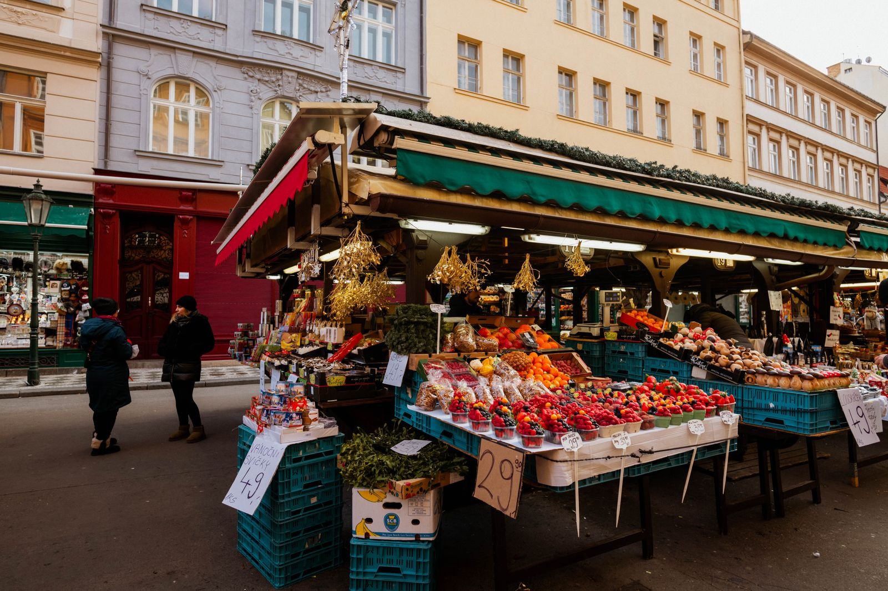

2027 전통시장·상점가 지원사업 — 접수 이미 시작, 11월 16일 마감입니다

중소벤처기업부가 2027년도 전통시장 및 상점가 활성화 지원사업 공고를 냈습니다. 접수는 10월 20일에 이미 시작됐고, 마감은 11월 16일입니다. 게다가 원공고에서 이틀도 안 돼 수정공고가 올라왔습니다. 신청을 검토 중이라면 원공고만 보고 서류를 맞추면 안 됩니다 — 수정분부터 확인해야 합니다.
30초 요약
| 항목 | 내용 |
|---|---|
| 접수 기간 | 2026-10-20 ~ 2026-11-16 (이미 진행 중) |
| 주관 | 중소벤처기업부 전통시장과 |
| 문의 | 044-204-7895 |
| 수정사항 1 | 문화관광형시장 지원 제외대상 추가 |
| 수정사항 2 | 시장경영지원 전국상인연합회 및 지회 신청방법 추가 |
무슨 사업인가요 — 시장 단위 예산의 본청 구간입니다
전통시장 및 상점가 활성화 지원사업은 개별 점포가 아니라 시장(또는 상점가)이라는 단위로 정부 지원을 받는 구조입니다. 시장 전체의 환경개선·콘텐츠·경영지원 프로그램을 다루기 때문에, 개인 사업자보다는 상인회·상인연합회가 신청 주체가 되는 경우가 대부분입니다. 상인회 임원이나 점포 경영이라면 "우리 시장이 접수 창이 열렸는지"를 먼저 확인하는 게 실질적인 첫 단계입니다.
사업 안에는 시장을 경영·관리하는 인력을 지원하는 트랙, 청년몰처럼 청년 상인을 키우는 트랙, 시장을 관광·체류형으로 바꾸는 트랙 등 여러 갈래가 섞여 있습니다. 트랙마다 주무부서 담당자가 다르니, 우리 시장에 필요한 트랙의 담당자에게 직접 전화하는 게 가장 빠릅니다 (전통시장과 044-204-7895).
수정공고는 무엇을 바꿨나요 — 두 칸이 열리고 두 칸이 닫혔습니다
수정사항은 두 가지입니다. 방향이 정반대라는 점에 주의하십시오.
- 문화관광형시장: 지원 제외대상이 추가됐습니다. 닫히는 칸입니다. 이 트랙을 노리던 시장이라면 우리 시장이 새로 늘어난 제외 요건에 걸리지 않는지 원공고 기준표로는 판정이 안 됩니다. 수정본 기준표로 다시 확인해야 합니다.
- 시장경영지원: 전국상인연합회 및 지회의 신청방법이 추가됐습니다. 열리는 칸입니다. 그동안 개별 시장이 신청 경로를 찾아야 했던 시장경영지원 분야에, 연합회·지회를 통한 신청 방법이 공식으로 생겼습니다. 상인회 규모가 작아 신청서 작성 자체가 부담이던 곳에는 실질적인 변화입니다.
누가 신청해야 하나요
전통시장·상점가로 등록·지정된 곳의 상인회와 그 소속 점포가 기본 대상입니다. 등록 여부와 무관하게 "전통시장 같게 운영되는 곳"은 이 사업 대상이 아닙니다 — 시장 등록 여부가 첫 관문입니다. 이미 이 사업을 운영 중인 시장도 연차 평가와 다음 연도 배정 문제가 걸려 있으니, 공고 기간에 평가 기준을 확인해 두는 편이 좋습니다.
마감 전에 무엇을 확인해야 하나요 — 남은 기간은 넉넉지 않습니다
마감 11월 16일까지 실질 업무일은 2주가 채 남지 않았습니다. 시장 단위 사업은 신청서 하나를 쓰는 데 끝나는 게 아니라 상인회 총회 의결·서류 취합·사업계획서가 돌아가야 해서, 개인 자금 신청보다 체감 준비 기간이 훨씬 깁니다. 오늘 확인했다면 이번 주 안에 트랙을 정하고 담당 부서와 통화를 끝내 놓아야 합니다.
- 원공고와 수정공고를 함께 열어 두세요. 첨부 파일(사업별 운영요령)이 수정본 기준으로 갈렸을 수 있습니다.
- 문화관광형시장을 노린다면 제외대상 추가분 저촉 여부를 담당 부서와 유선으로 확인하고, 통화 기록을 남겨 두세요.
- 전국상인연합회 소속이면 추가된 지회 신청방법이 우리 시장에도 열리는 창인지 문의해 보세요. 개별 신청보다 서류 부담이 줄어드는 구조입니다.